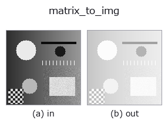

bridge op• 데이터 종류: matrix → image
• 호출: fullseye.apply(img, "matrix_to_img", a=0.5, b=0.5)(2-D 는 이미지 1 장 + 스칼라 노브 2 개 a,b∈[0,1] 모델)

*그림은 128×128 합성 입력에서 실제로 실행한 출력. 왼쪽이 입력, 오른쪽이 출력. 점군은 위에서 본 산점도(밝기 = z), 1-D 열은 꺾은선, 볼륨은 z 방향 최대값 투영, 동영상은 가운데 프레임, 복소 영상은 진폭이며, 그림이 되지 않는 반환값은 값 자체를 표시한다.*
노브 a 를 훑기(0.1 / 0.5 / 0.9, 다른 노브는 기본값):
▸ matrix_to_img: 노브 a 스윕 (문서 사이트)
노브 b 를 훑기(0.1 / 0.5 / 0.9, 다른 노브는 기본값):
▸ matrix_to_img: 노브 b 스윕 (문서 사이트)
단계(앞에 오는 op → 이 op, 왼쪽에서 오른쪽으로):
▸ matrix_to_img: 단계 (문서 사이트)
다른 영상에서도(합성 장면 / 사진 / 동전. 윗줄이 입력, 아랫줄이 그 출력. 노브는 기본값):
▸ matrix_to_img: 다른 입력 이미지 (문서 사이트)
행렬을 보기 위한 농담으로 만들어 영상으로 되돌린다 — 캐스트가 아니다.
가는 쪽(img_to_matrix)은 값도 형태도 바꾸지 않는 순수한 캐스트라고 명기해두었지만, 돌아오는 쪽도 똑같이 캐스트로 하면 거짓말이 된다: 행렬의 값은 [0,1]에 들어가지 않으며, 최솟값을 검정·최댓값을 흰색으로 늘리기만 하면 0이 어디인지 알 수 없다. 공분산·상관·유사 역행렬의 부호는 그것을 읽을 수 없으면 의미가 없다.
• a → 로그 압축의 세기. k = 10**(3a) - 1로 두고 y = sign(x) * log1p(k|x|) / log1p(k)(a=0은 선형, a=1에서 1000배 압축). 조건수처럼 자릿수가 벌어지는 행렬에서 작은 성분이 전부 검정으로 뭉개지는 것을 막는다.
• b → 기준. b < 0.5는 데이터의 min–max를 [0,1]로 늘린다, b >= 0.5는 0을 0.5에 두고 |x|의 최댓값으로 대칭으로(부호 있는행렬용. 0.5가 중립, 밝음 = 양, 어두움 = 음).
• 반환값: 입력과 같은 형태의 float64, 값 범위 [0,1]. 모든 요소가 같은 행렬은 균일한 0.5(min–max 쪽에서도 0으로 나누기가 되지 않도록 중립으로 넘긴다).
• 샘플 데이터 카탈로그(DL URL / 라이선스) —— 2-D 는 skimage.data(BSD/public)+ 합성, 3-D 는 실데이터 소스(Stanford/PDS 등)의 DL URL.
• 연산자의 내력·참고문헌 —— 이 연산자 족의 바탕이 된 연구/기법의 출처.
• 알고리즘의 정전(저자·연도)과 용도는 위의 패밀리 사용 가이드에 적혀 있습니다.
아래 프로그램은 실제로 실행됨을 확인했습니다(그림과 같은 입력). Studio 도움말에서는 이 블록이 버튼이 되어 즉시 불러와 실행할 수 있습니다.
img_to_matrix 0.50 0.50 matrix_to_img 0.50 0.50
• gallery2d_bridge — py -3.11 examples/gallery2d_bridge.py
image 를 입력으로 받는 것)identity · gaussian · mean_box · bilateral · unsharp · median · min_filter · max_filter
bridge)img_to_points · img_to_keypoints · img_to_signal · img_to_projection_profile · img_to_counts · img_to_matrix · img_to_video · img_to_volume
*Provenance: ops.py — 2D 연산자 레지스트리. 이 op 노트는 tools/opdocs.py md 가 자동 생성합니다(직접 편집하지 마세요).*
© 2026 Kazufumi Furuse — Fullseye operator documentation. Licensed under Apache-2.0.